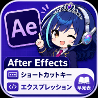

AE早見帳
かんたん使い方マニュアル
After Effects ショートカット＆エクスプレッション辞典アプリ
「AE早見帳」って何？
After Effects のショートカットキー120個とエクスプレッション（自動で動きをつける魔法の一文）36個を、スマホでパッと探せるアプリです。
ぜんぶに「中学生でもわかる」やさしい説明つき。一度開けば、電波がない場所でも使えます。
スマホのカメラでQRを読み取るか、
このURLを開いてください：
https://tkwfunkypop.github.io/public/tools/ae-shortcuts/
1スマホに入れる（1分でできます）
アプリストアは使いません。リンクを開いて「ホーム画面に追加」するだけです。お金もかかりません。
iPhone の場合（Safariで開いてください）
- カメラでQRコードを読み取って、表示されたリンクをタップして開く
- 画面の下にある 共有ボタン（四角から上に矢印が出ているマーク ⬆︎） をタップ
- メニューを下にスクロールして 「ホーム画面に追加」 をタップ
- 右上の 「追加」 をタップ → ホーム画面に「AE早見帳」のアイコンが出たら完成！
Android の場合（Chromeで開いてください）
- カメラでQRコードを読み取って、リンクを開く
- 画面に「インストール」や「ホーム画面に追加」と出たらそれをタップ。出ない場合は右上の 「⋮」メニュー → 「ホーム画面に追加」
- 「追加」をタップ → ホーム画面にアイコンが出たら完成！
ポイント：次からは、ホーム画面の「AE早見帳」アイコンをタップするだけで、ふつうのアプリと同じように開きます。一度開いておけば、電波のない場所（機内モード）でも動きます。
4エクスプレッションを使う（コピペでOK）
エクスプレッションとは、After Effects に貼るだけで自動で動きがつく「魔法の一文」です。プログラミングの知識はいりません。コピーして、貼るだけ。
💡 まずは一番人気の wiggle(2, 30) を「位置」に貼ってみてください。レイヤーがプルプル揺れたら成功です。
「コピー」の横の 🔗 マークは何？
🔗 は「このカードへのリンク」をコピーするボタンです。「コピー」ボタンが式そのもの（After Effectsに貼る用）をコピーするのに対して、🔗 はカードの場所のURL（人に教える用）をコピーします。
- 共有したいカードの 🔗 をタップ（URLがコピーされます）
- LINEやチャットに貼って送る
- 受け取った人がURLを開くと、そのカードが自動で開いてデモまで再生された状態で表示されます
「それ、wiggleでできるよ！」と友だちに教えるときや、質問への回答に「この式を見て」と添えるときに便利です。
うまくいかない時は「AIに聞く」ボタン
6困ったときは（よくある質問）
アプリが古いまま？ 新しい機能が出ない
ネットにつながった状態で、アプリを一度閉じて開き直してください。画面の一番下に書いてあるバージョン（v2.3 など）が最新かどうかの目印です。
電波がない場所で開いたら真っ白になった
しばらく使っていないと、オフライン用のデータがスマホから消えることがあります（iPhoneの仕様です）。ネットにつながる場所で、同じアイコンから開き直せば元どおり使えます。
ショートカットを押しても効かない
3つ確認してください。①Mac / Win の表示が自分のパソコンと合っているか ②MacのFキー（F9など）は Fn と一緒に押しているか ③日本語入力がONになっていないか（半角英数にすると直ることが多いです）。
エクスプレッションを貼ったら赤いエラーが出た
貼る場所が違うことがほとんどです。カードのコードの1行目に「◯◯に貼る」と書いてあるので確認してください（例：sourceRectAtTime は「長方形パス→サイズ」に貼ります）。エラーが出たら Ctrl+Z（⌘+Z）で戻せるので安心してください。
★お気に入りは他のスマホにも引き継がれる？
お気に入りはその端末の中だけに保存されます。機種変更したら登録し直してください（誰かに見られることはありません）。
アイコンをホーム画面から消してしまった
データは消えていません。もう一度QRコードからURLを開いて「ホーム画面に追加」すれば戻ります。